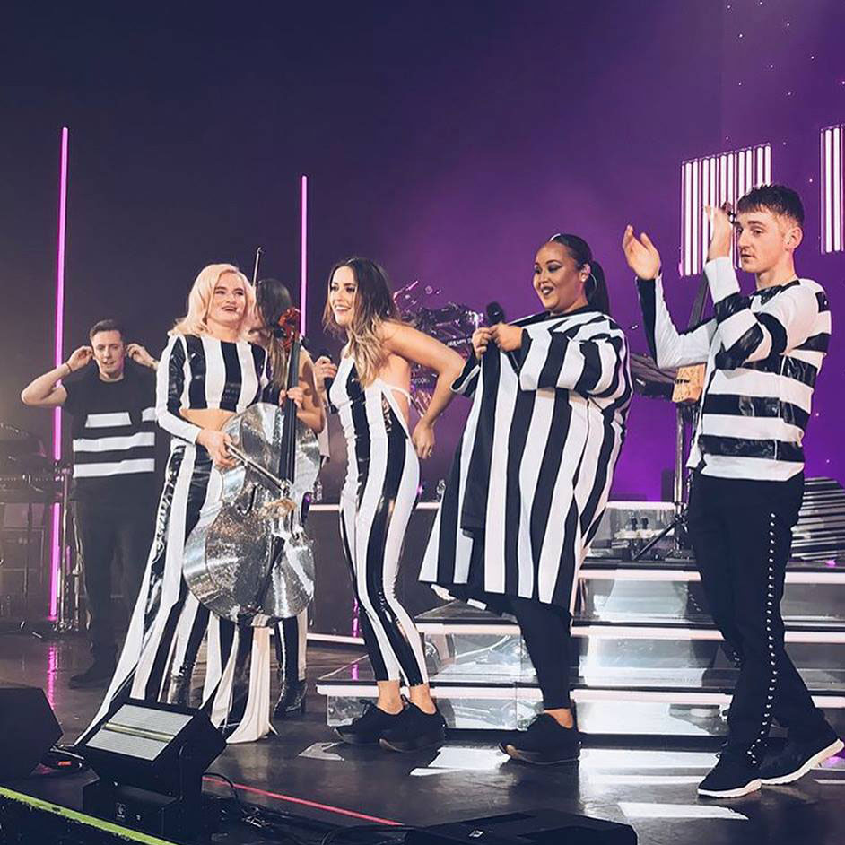
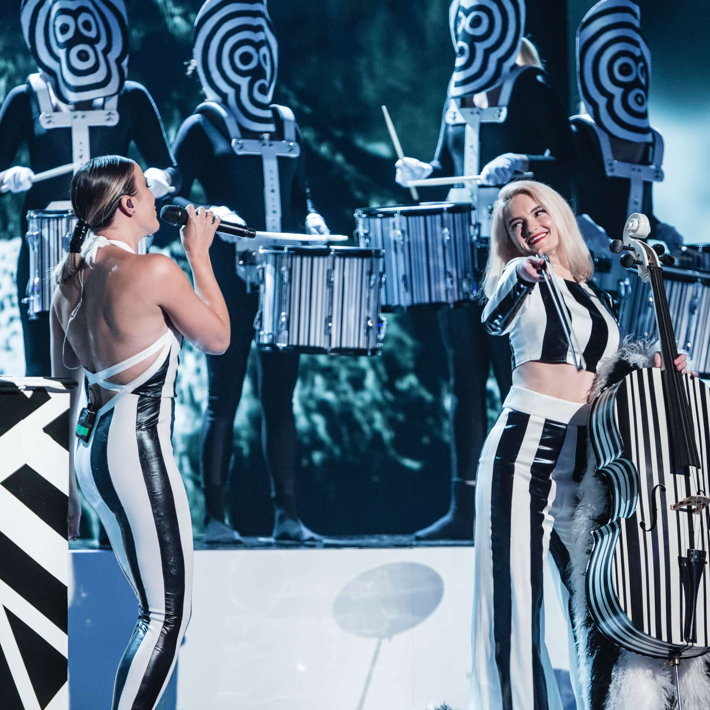

26
SU HISTORIA.
Su historia iba a cambiar en diciembre de 2013 cuando Rather be vio la luz. Le costó arrancar pero desde enero ya fue imparable. Clean Bandit había creado su primer hit mundial.

Amor por la
música clásica.
SU TRABAJO.
Como grupo no daría sus primeros frutos hasta que entre 2012 y 2013 publicaran sus primeros sencillos: A+E, Mozart's House y Dust Clears. Fueron canciones con cierto recorrido en Reino Unido pero que no tuvieron el 'punch' necesario para romper fronteras.
-
Música electrónica, toques de música clásica
y una voz para no olvidar: la de una por entonces poco
conocida Jess Glynne. ¿Qué vueltas da la vida, verdad?